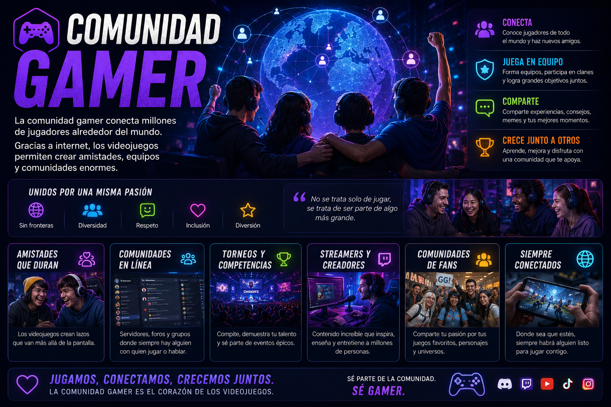
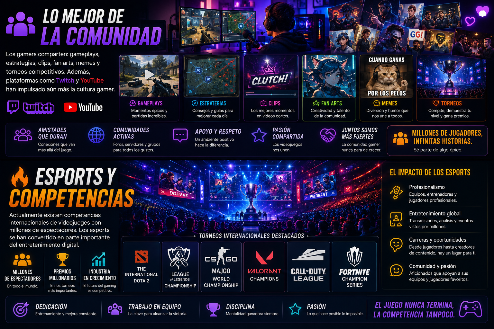

La comunidad gamer conecta millones de jugadores alrededor del mundo. Gracias a internet, los videojuegos permiten crear amistades, equipos y comunidades enormes.

Los gamers comparten: gameplays, estrategias, clips, fan arts, memes y torneos competitivos. Además, plataformas como Twitch y YouTube han impulsado aún más la cultura gamer.
Actualmente existen competencias internacionales de videojuegos con millones de espectadores. Los esports se han convertido en parte importante del entretenimiento digital.
